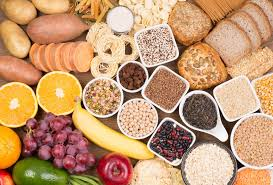
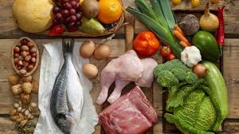
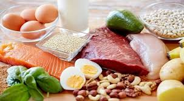

What is a Weight Gain and what is a weight gain diet ?
The weight gain is not as easy as it sounds.Due the complexity of body metabolism and body types the weight gain journey can be a bit
a bit daunting.Howeever, learning more about your body and metabolism can help you gain the ideal weight you desire.This page will help you
gain weight depending on the type of budget and diet plan suitable for you.Be sure to follow the tips below :
Don't skip the Carbs:

Carbohydrates are an essential part of every diet particularly when it comes to weight gain.Consuming carbohydrates is a great source of
energy.Carbs should be about 50 percent of your weight gain diet.Consuming a lot of carbs will allow you to gain weight faster.Cutting out
carbs completely from your diet might leave you malnourished and make it difficult for you to gain weight faster.Below are various types of
few links to follow to help you along your weight gain journey.
Build up on the Proteins:

Know your Proteins:
Proteins are an instrumental part of the weight gain diet.Protein is very important. Protein helps to build lean muscle tissue.
and that's how you get big. Consuming protein will help you with your weight gain diet.1-2 grams per lb of bodyweight, and 30% of your diet will
be just enough to get you big.Below are links to the different types of proteins to consume.
Get your Fats:

Incorporate fats into your diet.:
Fats are often overlooked in most peoples diets.Nonetheless, they remain a crucial part of the weight gain diet.Be sure to include them
in your weight gain diet.Be sure to follow the links below to learn more about fats .
In Conclusion:
Hope you found the above information useful.Below are a few additional links to follow along on your weight gain journey.
Be sure to be patient with yourself on your journey to self gain.